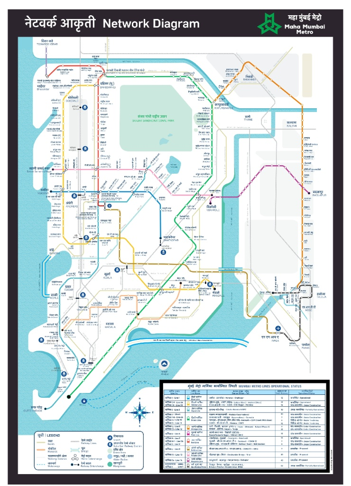

It explores
Thin branches spread into several directions to sample the surrounding space.
Interactive college case study · 2026
How a brainless, single-celled organism explores food, strengthens useful tubes, and inspires smarter routes for cities and spacecraft.
Optimization sounds like a computer problem. Physarum shows another route: grow everywhere at first, sense what is useful, then invest more material in the connections that work.
This site follows the story in your presentation, with the heavy mathematics kept in the downloadable paper.
Physarum is a plasmodial slime mould. Its body is a changing network of tubes, not a brain making plans.
Thin branches spread into several directions to sample the surrounding space.
Oat flakes act as nutrient sources. Chemical signals and cytoplasmic flow guide growth.
Useful routes thicken. Weak branches receive less flow and gradually fade away.
“The result is a near-optimal network without a central controller.”
Based on Physarum experiments and the 2020 SMA paperChoose one case study. Every mode uses the same simple story: explore, connect, reinforce, prune.
Branches are drawn as connected tubes, not scattered particles. Bright gold routes are the paths receiving stronger flow; faint branches represent exploration that is gradually deprioritised.
Food sources are placed at important stations. The simulated slime explores the map, then highlights the stronger connections between them.

The five stages
The same idea can be translated into computational models for path planning, transport design and scientific mapping.
Compare routes between population centres and reduce unnecessary travel.
Help a rover choose a safe, energy-aware path around rough terrain.
Trace filament-like structures in the large-scale distribution of galaxies.
Physarum connected food sources through a maze.
A biological network closely resembled an efficient transport map.
Li et al. formalised the behaviour as a stochastic optimisation method.
Slime Mould-Inspired Optimization Algorithms: Urban Planning & Space Exploration Pathfinding.
For the presentation
Primary algorithm source: Li, S. et al. “Slime mould algorithm: A new method for stochastic optimization.” Future Generation Computer Systems, 2020. DOI: 10.1016/j.future.2020.03.055